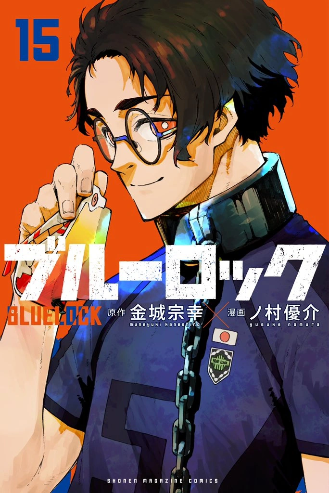
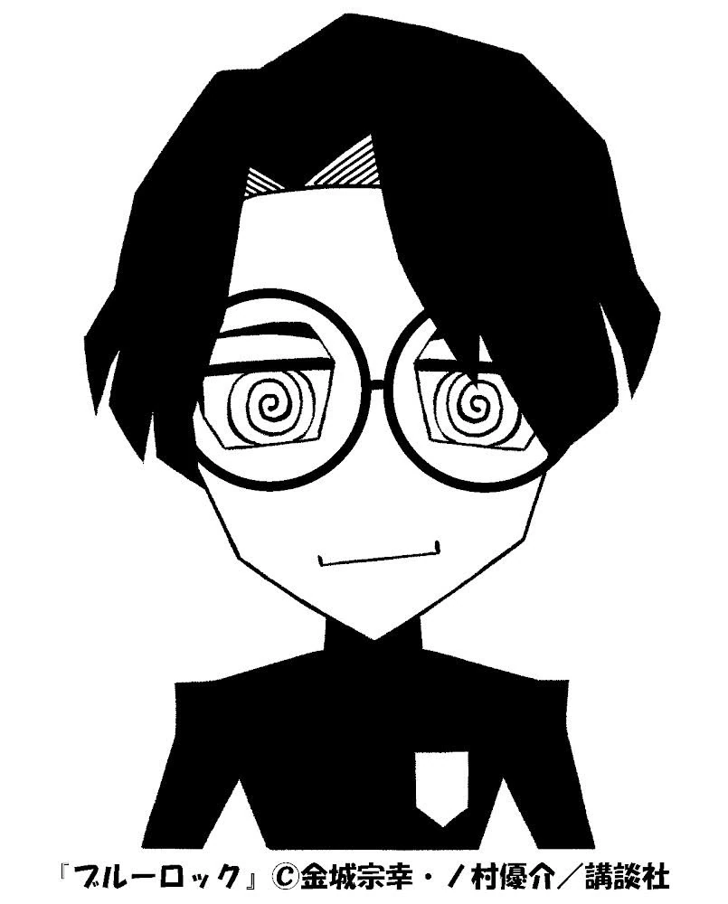
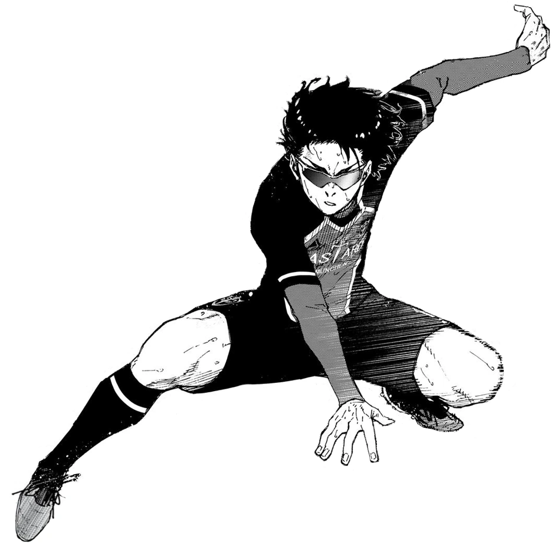
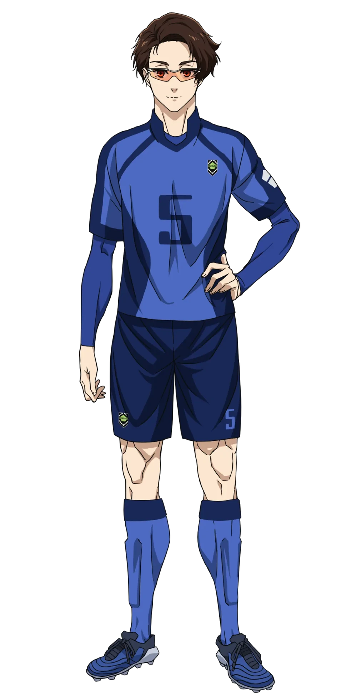

Japanese: 雪宮 剣優
Rōmaji: Yukimiya Kenyū
Age: 19
Birthday: April 28
Height: 184cm / 6"
Hair color: Brown
Eye color: Orange
Team: Bastard München (Germany)
Jersey Numbers: 5 (Blue lock XI) / 15 (Bastard München)
Position(s): Left Winger / Central Attacking MIdfielder / Fullback
Yukimiya is tall, with a slim and lightly toned build. He has orange eyes, and his hair is brown and stylized. When outside of a match, it is groomed and straight, whereas during a match, it is wilder and messier. He wears round spectacles in daily life but a pair of specialized windproof glasses when on the pitch to protect his deteriorating vision.
Yukimiya is highly confident in his own abilities, declaring himself the strongest player in Japan when it comes to one-on-one battles. He also has a kind and charismatic personality, appearing to make friends easily, such as with Seishiro Nagi, Jyubei Aryu, and Tabito Karasu. In addition to this, Yukimiya likes to banter even with his opponents, indicating a playful element to his personality.
Yukimiya claims that he is a pacifist, which forms part of his ego, as he thinks the easiest and most peaceful way to score would be to do so himself. He is also highly inquisitive, often being the first to ask Jinpachi Ego questions about his selection criteria. At the same time, however, he is not afraid of confrontations, as seen when he questions Noel Noa, the current world No. 1, about his decision to sub in Yoichi Isagi instead of him during Bastard München vs. FC Barcha.